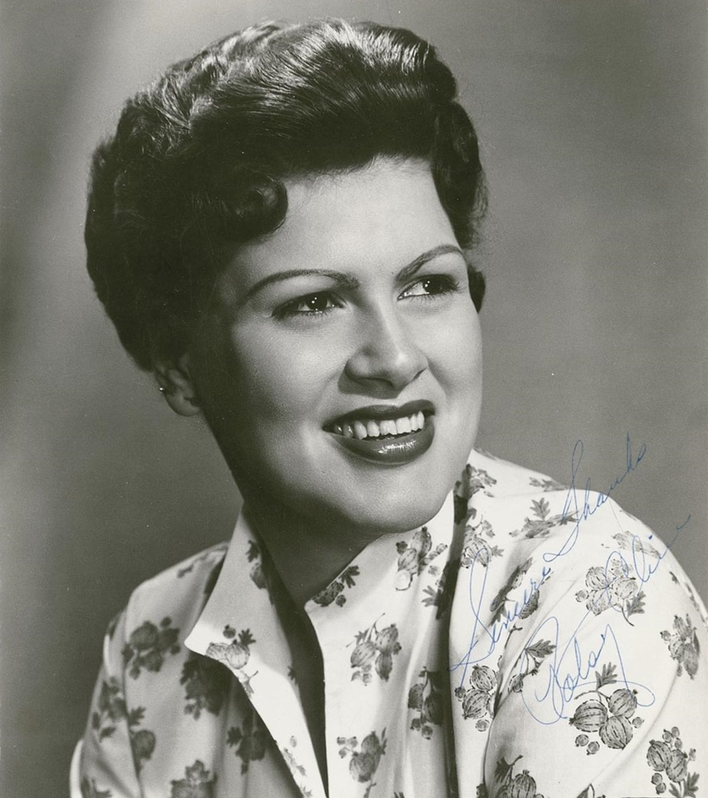

I Fall to Pieces is the Hank Cochran and Harlan Howard ballad that gave Patsy Cline her first country No. 1.
Decca released it on January 30, 1961, and it took six months to reach the top.
Brenda Lee and Roy Drusky had both passed on it.

Table of Contents
The Story Behind I Fall to Pieces
Two Songwriters, One Hour
Cochran came up with the title, and the two writers finished the song at Howard's house.
In a 1999 recollection, Howard said they wrote it "in the next hour."
He then timed it, found it too short, and wrote a second section of the same length.
Howard's wife, Jan, cut the demo at Pamper Music in Goodlettsville, Tennessee.
Who Said No
Howard pitched the song to Decca producer Owen Bradley.
Bradley later told Billboard, "I bought the lyrics right over the phone, without even hearing the tune."
By most accounts, Brenda Lee called it too country.
Roy Drusky reportedly said it was not a man's song.
Cline overheard the argument and asked to record it herself.
Recording Day
November 16, 1960
Cline recorded it on November 16, 1960, in Bradley's Nashville studio.
She worried the song was too pop and that the male voices of The Jordanaires would swamp her.
The Jordanaires' Gordon Stoker later said she was difficult that day.
Howard recalled that other rhythms "just laid there and bled all over the floor," so the band went back to the shuffle.
The Band
- Hank Garland and Randy Hughes on guitar.
- Ben Keith on steel guitar.
- Hargus "Pig" Robbins on piano.
- Bob Moore on bass, and Doug Kirkham on drums.
- Harold Bradley on six-string electric bass.
"That's the One"
Howard said Cline's voice made the song feel "just like satin."
By the fourth take, he said, "every grown man in that studio was bawling like a baby."
Bradley then said, "That's the one."
Howard's daughter-in-law, Melanie Smith-Howard, has written that Cline did not love the song and that Bradley made her cut it.
How It Charted
A Slow Start
Country radio resisted the record at first.
Pamper Music's Hal Smith hired promoter Pat Nelson, who pitched it to pop disc jockeys as a cousin of Patti Page and Rosemary Clooney.
A pop station in Columbus, Ohio, helped start its momentum.
It reached the country chart in early April and the Hot 100 in late May.
The Accident
On June 14, 1961, Cline was badly hurt in a head-on car crash.
She spent about a month in the hospital while the single kept climbing.
On August 7, 1961, it reached No. 1 on Billboard's country chart.
Cline later gave Howard a bracelet and Cochran a money clip, both engraved "Thanks for the Hit - Patsy."
| Chart | Year | Peak |
|---|---|---|
| Hot Country Songs | 1961 | No. 1 (two weeks) |
| Billboard Hot 100 | 1961 | No. 12 |
| Adult Contemporary | 1961 | No. 6 |
| Australia | 1961 | No. 13 |
| UK Singles | 1991 | No. 87 |
Covers and Honors
Rankings
- 2004: Rolling Stone ranked it No. 238 on its 500 Greatest Songs list.
- 2014: Rolling Stone placed it No. 40 among the 40 saddest country songs.
- 2024: Rolling Stone placed it No. 72 on its 200 Greatest Country Songs list.
Other Versions
Diana Trask took it to No. 37 on the country chart in 1969.
Sissy Spacek sang it in the 1980 film Coal Miner's Daughter.
Aaron Neville and Trisha Yearwood won the 1995 Grammy for Best Country Collaboration with Vocals with their duet.
In 2024, Beyoncé used a portion in the intro to "Sweet Honey Buckiin'" on Cowboy Carter.
Where It Fits
The single belongs to 1961, the year she became a crossover star.
Her follow-up, Crazy, went higher on the pop chart.
Her full story is in our Patsy Cline biography.
For the wider sound, see the Country hub and our 100 best 60s songs.
FAQ
Who wrote I Fall to Pieces?
Hank Cochran and Harlan Howard wrote it.
Cochran came up with the title, and the two finished the song at Howard's house.
Who turned down the song before Patsy Cline?
Brenda Lee reportedly called it too country.
Roy Drusky reportedly said it was not a man's song.
Accounts differ on who else passed.
When did Patsy Cline record it?
She recorded it on November 16, 1960, in Nashville, with Owen Bradley producing.
Decca released it on January 30, 1961.
Was it a number one hit?
Yes on the country chart.
It reached number one on Billboard's country chart on August 7, 1961, for two weeks.
It peaked at number 12 on the Hot 100.
Who has covered the song?
Diana Trask charted with it in 1969.
Aaron Neville and Trisha Yearwood won the 1995 Grammy for Best Country Collaboration with Vocals for their duet version.
Cline died in a 1963 plane crash that also killed Randy Hughes, who played guitar on this record.
Wikipedia's entry on the song covers the charts and covers in more depth.
Press play above and hear why I Fall to Pieces still lands like a quiet confession.